Cuenta objetos con una foto
Haz una foto, toca una pieza y Contapix marca y cuenta todas las iguales en el iPhone. Corrige con un toque y comparte la hoja de recuento en PDF.
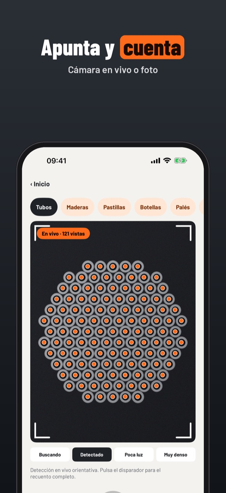
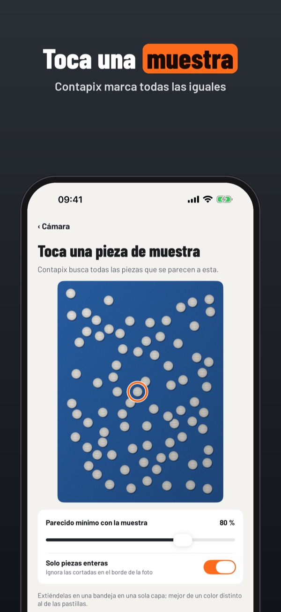
Contapix cuenta tubos, maderas, pastillas, botellas o palés a partir de una foto. Toca una pieza de muestra y el iPhone marca cada una con un punto. Tú revisas y corriges.
Puedes hacer 3 recuentos al día con todas las plantillas y la corrección sin compra. Contapix Plus es un pago único: recuentos ilimitados, hojas PDF y CSV y trabajos. Sin suscripción.
Contapix propone un número a partir de la foto; revísalo y corrígelo antes de usarlo en inventarios, entregas o dispensación. No está vinculado a ningún proveedor ni organismo.
Terms of Use (EULA): https://www.apple.com/legal/internet-services/itunes/dev/stdeula/
Privacy: https://baytechbv.github.io/privacy/contapix-eu/
Licz rury, drewno i tabletki
Zrób zdjęcie, dotknij jednej sztuki, a Contapix oznaczy i policzy wszystkie podobne na iPhonie. Popraw jednym dotknięciem i udostępnij arkusz PDF.
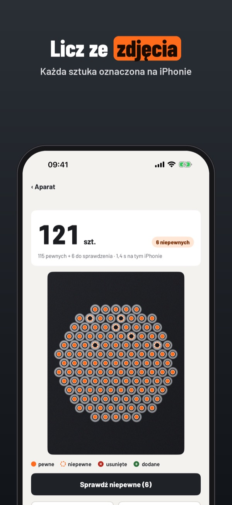
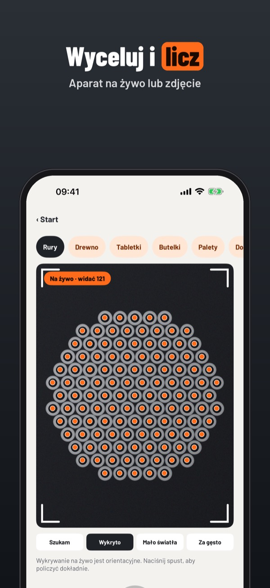
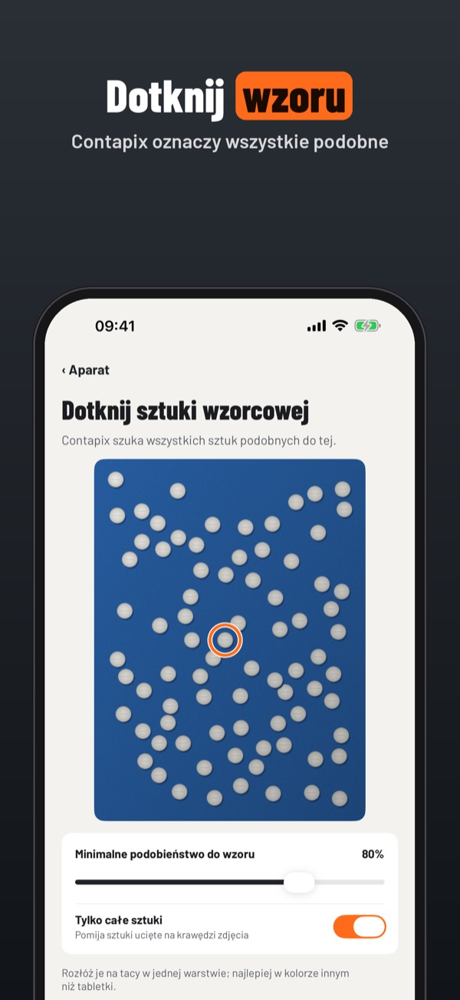
Contapix liczy rury, deski, tabletki, butelki czy palety ze zdjęcia. Dotknij jednej sztuki jako wzoru, a iPhone oznaczy każdą kropką. Ty sprawdzasz i poprawiasz.
Bez zakupu: 3 liczenia dziennie, wszystkie szablony i poprawianie. Contapix Plus to jednorazowy zakup: liczenie bez limitu, arkusze PDF i CSV oraz zlecenia. Bez subskrypcji.
Contapix proponuje liczbę na podstawie zdjęcia; sprawdź ją i popraw przed użyciem w inwentaryzacji, dostawie lub wydawaniu leków. Aplikacja nie jest powiązana z żadnym dostawcą ani urzędem.
Terms of Use (EULA): https://www.apple.com/legal/internet-services/itunes/dev/stdeula/
Privacy: https://baytechbv.github.io/privacy/contapix-eu/
Objecten tellen met je camera
Maak een foto, tik één stuk aan en Contapix markeert en telt alle gelijke stukken op je iPhone. Corrigeer met één tik en deel de telstaat als pdf.
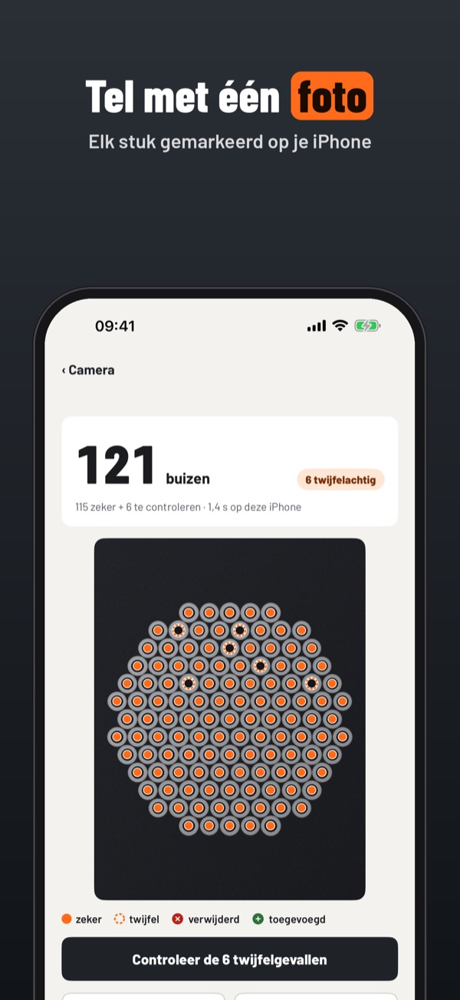
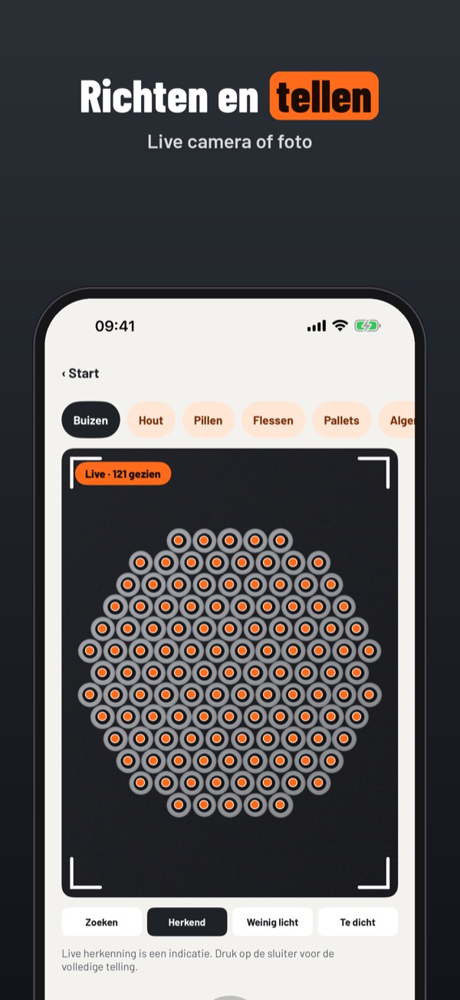
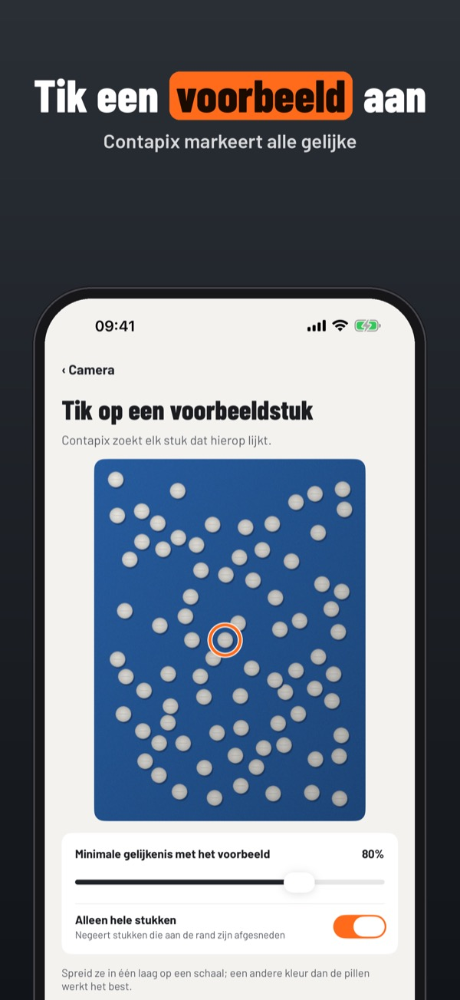
Contapix telt buizen, planken, pillen, flessen of pallets op een foto. Tik één stuk aan als voorbeeld en je iPhone zet bij elk stuk een stip. Jij controleert en corrigeert.
Zonder aankoop: 3 tellingen per dag, alle sjablonen en corrigeren. Contapix Plus is een eenmalige aankoop: onbeperkt tellen, telstaten in pdf en csv en klussen. Geen abonnement.
Contapix stelt een aantal voor op basis van de foto; controleer en corrigeer het voordat je het gebruikt voor inventaris, levering of uitgifte. Niet verbonden aan een leverancier of overheid.
Terms of Use (EULA): https://www.apple.com/legal/internet-services/itunes/dev/stdeula/
Privacy: https://baytechbv.github.io/privacy/contapix-eu/
Objekte zählen mit der Kamera
Foto machen, ein Teil antippen – Contapix markiert und zählt alle gleichen Teile auf dem iPhone. Mit einem Tipp korrigieren, Zählprotokoll als PDF teilen.
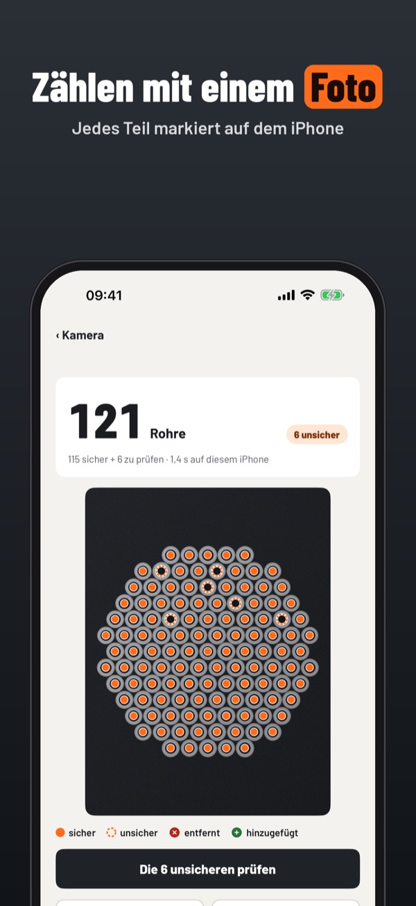
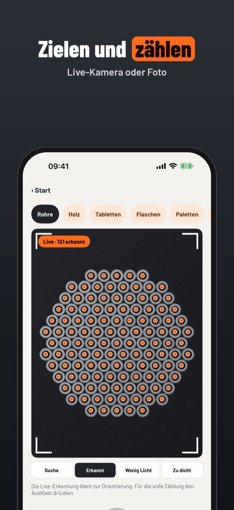
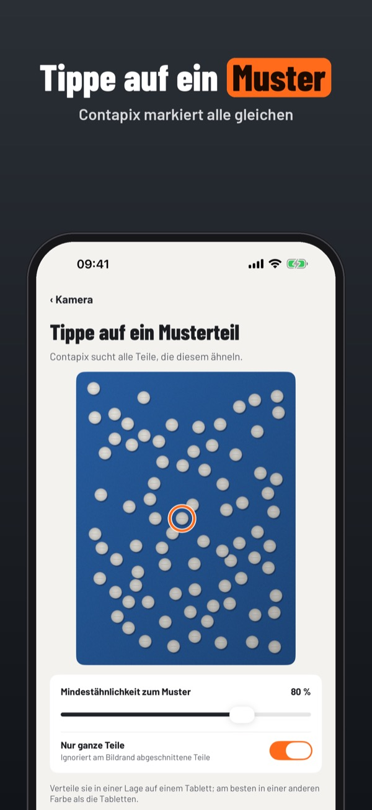
Contapix zählt Rohre, Bretter, Tabletten, Flaschen oder Paletten auf einem Foto. Tippe ein Musterteil an, und das iPhone setzt auf jedes Teil einen Punkt. Du prüfst und korrigierst.
Ohne Kauf: 3 Zählungen pro Tag, alle Vorlagen und Korrektur. Contapix Plus ist ein Einmalkauf: unbegrenzt zählen, Protokolle als PDF und CSV und Aufträge. Kein Abo.
Contapix schlägt eine Anzahl anhand des Fotos vor; prüfe und korrigiere sie, bevor du sie für Inventur, Lieferung oder Ausgabe verwendest. Nicht mit Lieferanten oder Behörden verbunden.
Terms of Use (EULA): https://www.apple.com/legal/internet-services/itunes/dev/stdeula/
Privacy: https://baytechbv.github.io/privacy/contapix-eu/
Comptez tubes, bois et cachets
Prenez une photo, touchez une pièce et Contapix marque et compte toutes les pièces semblables sur l’iPhone. Corrigez d’un geste et partagez la fiche en PDF.
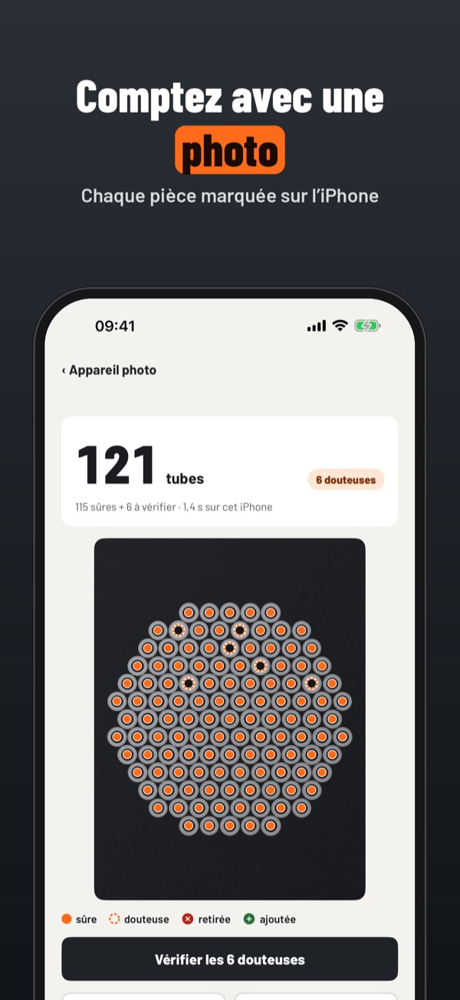
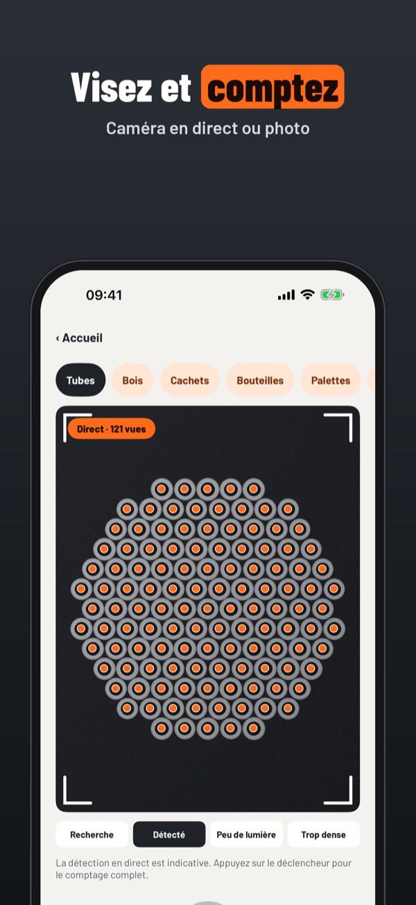
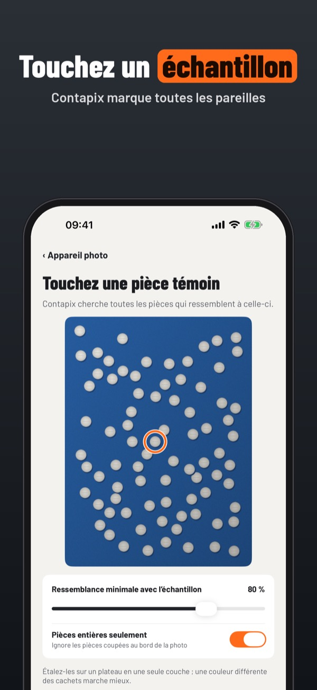
Contapix compte tubes, planches, comprimés, bouteilles ou palettes sur une photo. Touchez une pièce modèle et l’iPhone place un point sur chacune. Vous vérifiez et corrigez.
Sans achat : 3 comptages par jour, tous les modèles et la correction. Contapix Plus est un achat unique : comptages illimités, fiches PDF et CSV et chantiers. Sans abonnement.
Contapix propose un nombre à partir de la photo ; vérifiez-le et corrigez-le avant de l’utiliser pour un inventaire, une livraison ou une délivrance. Sans lien avec un fournisseur ou une administration.
Terms of Use (EULA): https://www.apple.com/legal/internet-services/itunes/dev/stdeula/
Privacy: https://baytechbv.github.io/privacy/contapix-eu/
Conta tubi, legno e pastiglie
Scatta una foto, tocca un pezzo e Contapix segna e conta tutti quelli uguali sull’iPhone. Correggi con un tocco e condividi la scheda in PDF.
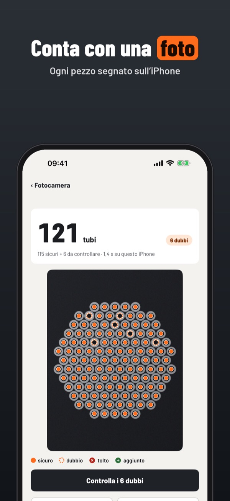
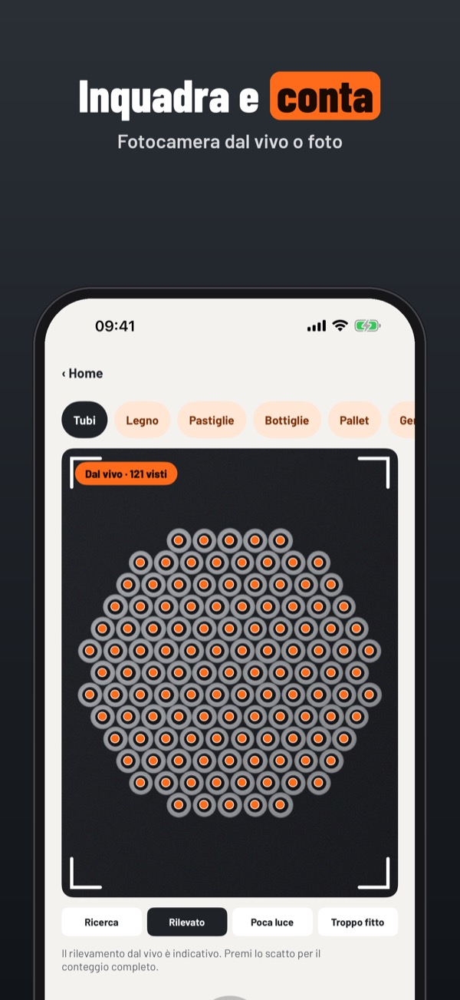
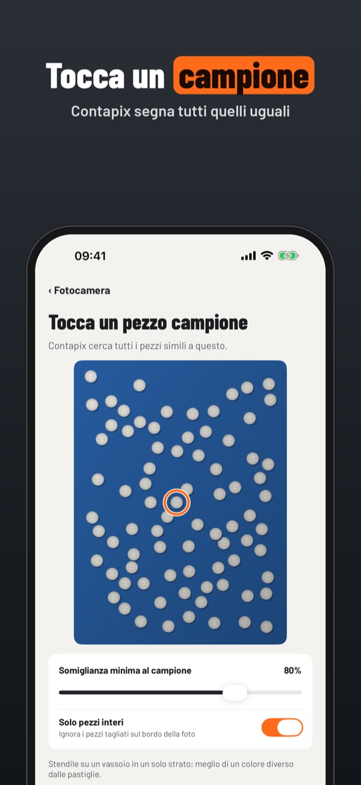
Contapix conta tubi, tavole, pastiglie, bottiglie o pallet da una foto. Tocca un pezzo campione e l’iPhone mette un punto su ognuno. Tu controlli e correggi.
Senza acquisto: 3 conteggi al giorno, tutti i modelli e la correzione. Contapix Plus è un acquisto unico: conteggi illimitati, schede PDF e CSV e lavori. Nessun abbonamento.
Contapix propone un numero a partire dalla foto; controllalo e correggilo prima di usarlo per inventari, consegne o dispensazione. Non è collegata a fornitori né enti pubblici.
Terms of Use (EULA): https://www.apple.com/legal/internet-services/itunes/dev/stdeula/
Privacy: https://baytechbv.github.io/privacy/contapix-eu/